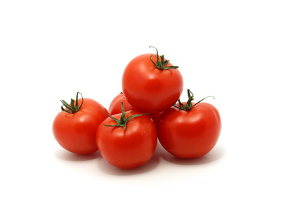

Field Tomatoes (Lycopersicon esculentum)

Mating & Breeding System: Tomato flowers grow in loose clusters which hang with the reproductive organs pointing downward. They do not produce nectar, and the pollen produced within the anthers must be shaken out through small pores. A visiting bee must collect pollen by hanging upside-down from the flower, grasping the stamens in its mandibles and "buzzing" to shake the pollen out. Flowers are self-fertile and the probability of self-pollination varies among varieties, according to differences in flower physiology and anatomy. In the absence of pollinators, wind agitation of flowers leading to self-pollination is generally sufficient to set fruit.
Pollination, Quality & Yield: Research has shown that the quantity and distribution of pollen on the stigma is related to with the marketability of the fruit. Tomatoes can be fully pollinated by self- or cross-pollen, and there is no evidence that cross-pollination improves quality.
Pollination Recommendations: As pollinators must be able to ‘buzz pollinate’ tomato flowers, bumble bees are an ideal choice. The use of bumble bees to pollinate tomatoes in Ontario greenhouses is well established, although the practice is less advanced for field tomatoes. Wild bees that can buzz pollinate, including bumble bees (Bombus impatiens, B. vosnesenskii and other Bombus sp) and miner bees (Andrenidae), can be effective pollinators of tomato. Honey bees will forage on tomatoes for pollen, but most members of a colony will seek nectar plants elsewhere. Due to their lack of ability to buzz pollinate, it is possible that even when honey bees are placed on field tomatoes, much of the fruit set is due to the actions of wind or other insects.
References
Buchmann, S. L. 1983. Buzz pollination in angiosperms. In Jones, C.E. & Little, R.J. (eds.) Handbook of Experimental Pollination Biology, Van Nostrand Reinhold Co., New York.
Dogterom, M. H., Matteoni, J.A., & Plowright, R.C. 1998. Pollination of greenhouse tomatoes by the North American Bombus vosnesenskii (Hymenoptera: Apidae). Journal of Economic Entomology 91:71-75.
Greenleaf, S.S. & Kremen, C. 2006a. Wild bee species increase tomato production and respond differently to surrounding land use in Northern California. Biological Conservation 133:81-87.
Kevan, P.G., Straver, W.A., Offer, M., & Laverty, T.M. 1991a. Pollination of greenhouse tomatoes by bumble bees in Ontario. Proceedings of the Entomological Society of Ontario 122:15-19.
Morandin, L.A., Laverty, T.M., & Kevan, P.G. 2001a. Bumble bee (Hymenoptera: Apidae) activity and pollination levels in commercial tomato greenhouses. Journal of Economic Entomology 94:462-467.
Plowright R. C. & Laverty, T.M. 1987. Bumblebees and crop pollination in Ontario. Proceedings of the Entomological Society of Ontario 118:155-160.